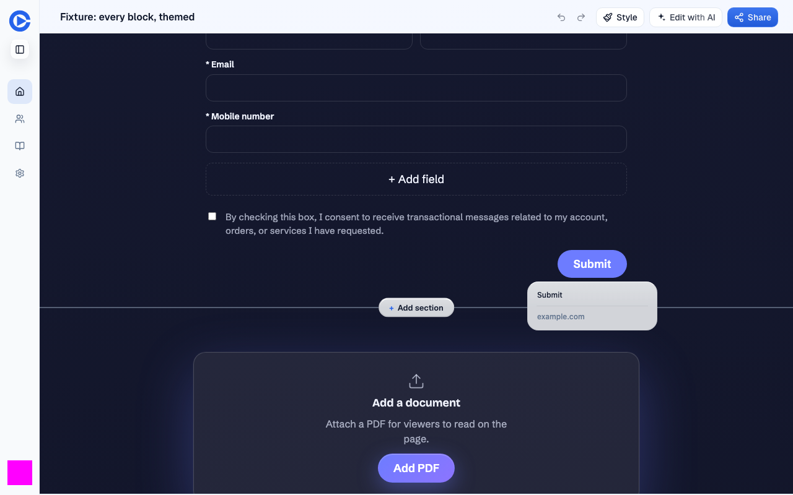
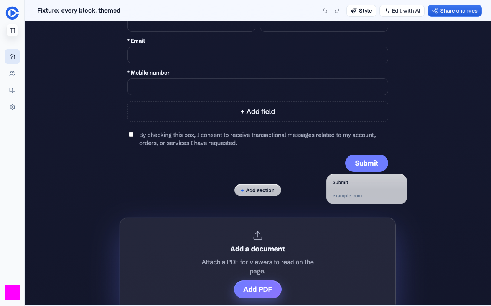
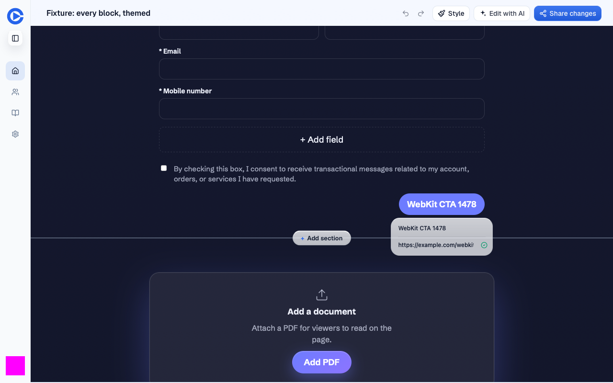
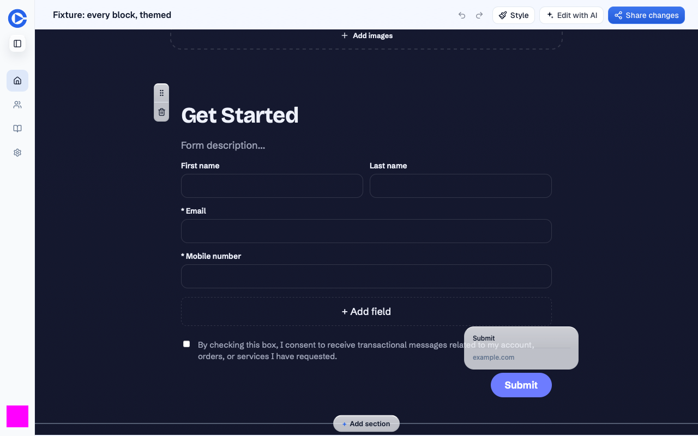
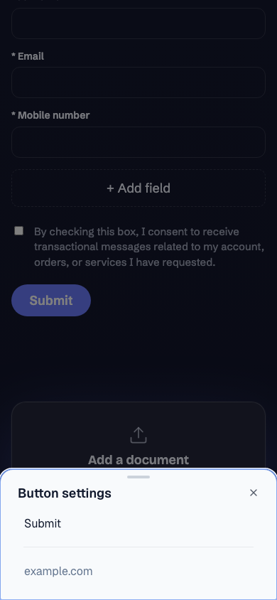

Prior isolated component fixture, not served by the PR preview
2026-10-14T19:31:32.211458+00:00
https://pr-1478.clarity-video.workers.dev06261465ff4e744136a1714411dc1d90637d9d30
| Check | Result | Evidence |
|---|---|---|
| Exact preview SHA and seeded session | pass | Doctor passed with explicit --expect-sha. Final doctor also passed. |
| Chromium full editor | pass | Desktop popup 210 x 79 px. Label and link persisted across reload; original values restored and reopened. |
| Old WebKit full editor | pass | Required webkit-2203 executable reports 26.5. Desktop popup 210 x 79 px. Both fields persisted across reload, then restored and reopened. |
| Bottom-edge flip | pass | Both engines placed the 79 px popup above the button with a 6 px gap. |
| Adjacent mobile sheet | pass | Both engines opened and reopened a 390 x 184 px sheet at y=660 in a 390 x 844 viewport. Viewport emulation only. |
| Artifact audit | warn | Old fixture dimensions distinguish the defect: 799.984375 px before, 79 px after. Images support these measurements. Public caption says 26.0; independent results and this executable report 26.5. |
| Console and responses | warn | Chromium has no recorded console errors. WebKit logged report-only CSP errors and one ResizeObserver notification error. No recorded HTTP response was 400 or higher. Logs exclude bodies, cookies and headers. |
| Restore all test changes | fail | CTA content is restored. The API pins three previously absent extras identity keys to empty strings, and draft revision advanced from 1 to 6. Exact document equality failed. Publication was not changed; editor now indicates unpublished changes. |
| Actual Safari / iPhone | not run | Playwright WebKit is Safari-engine coverage, not an installed Safari or device test. |







Initial CLI doctor hit rapid ETIMEDOUT. Curl and browsers worked. Retrying Node with ipv4first passed. No configured proxy found; no security settings changed. This supports a Node connection-path issue, not a proven DNS root cause.
{
"chromium": {
"httpErrors": [],
"consoleErrors": 0,
"pageErrors": [],
"successfulEditorPuts": 2
},
"webkit": {
"httpErrors": [],
"consoleErrors": 7,
"pageErrors": [
"ResizeObserver loop completed with undelivered notifications."
],
"successfulEditorPuts": 2
}
}The WebKit CSP error also occurs on page navigation before opening settings. One ResizeObserver notification occurred around initial editor load. Its cause is unresolved; it did not prevent measured interactions. No header or security policy was changed.
CTA content is restored. The API pins three previously absent extras identity keys to empty strings, and draft revision advanced from 1 to 6. Exact document equality failed. Publication was not changed; editor now indicates unpublished changes.
Restoration used the original document with the current base revision, then re-fetched it. Server ownership pinning retains the three empty identity keys. No publication request was made. Private API snapshots are excluded. Do not publish private/.
No actual Safari or iPhone run. No full editor baseline deployment; before evidence is isolated component footage. Only mobile viewport resize was tested, not touch or virtual keyboard behavior. Old mobile Chromium fixture failed on both variants; this full editor viewport check passes, but does not explain the old failure. No T3 browser tool was exposed. No product code edits, commits, deploys or merges. This redacted report is published separately.
Network limitation: response statuses were recorded, but failed requests without a response were not separately captured. Zero recorded HTTP errors does not prove zero transport failures.